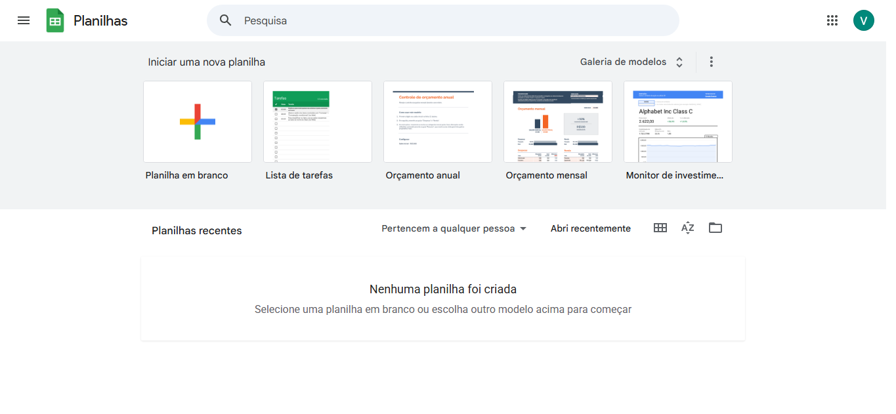
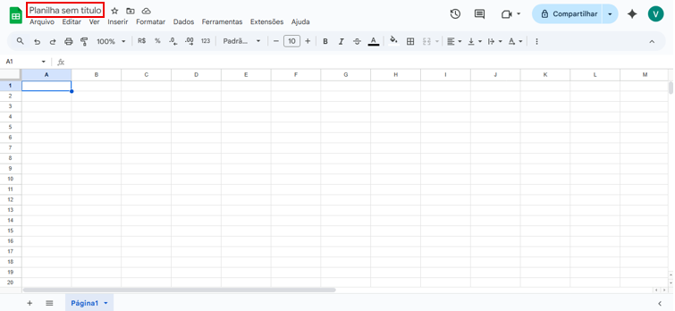
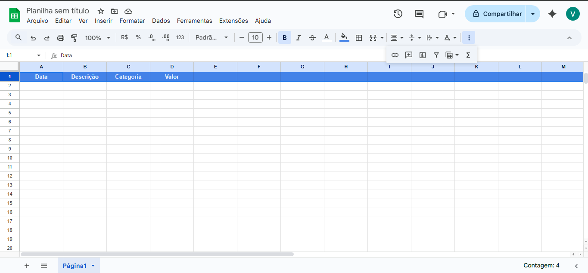
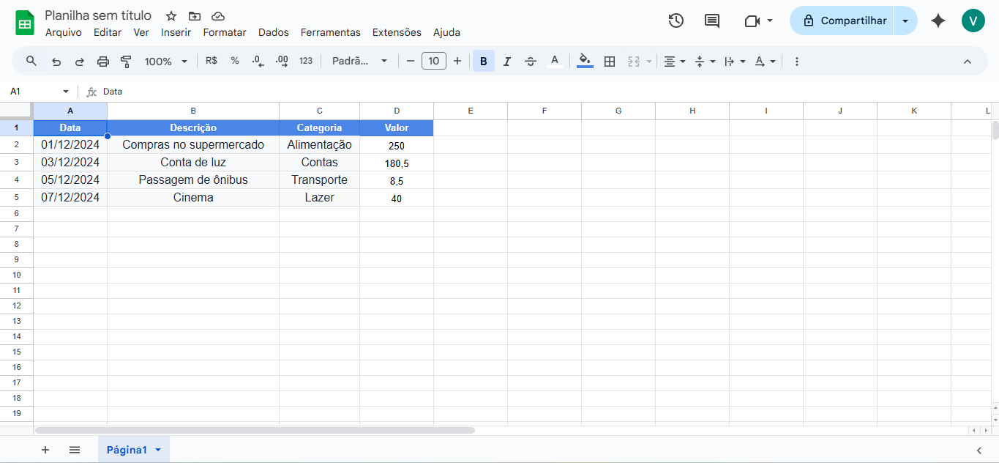
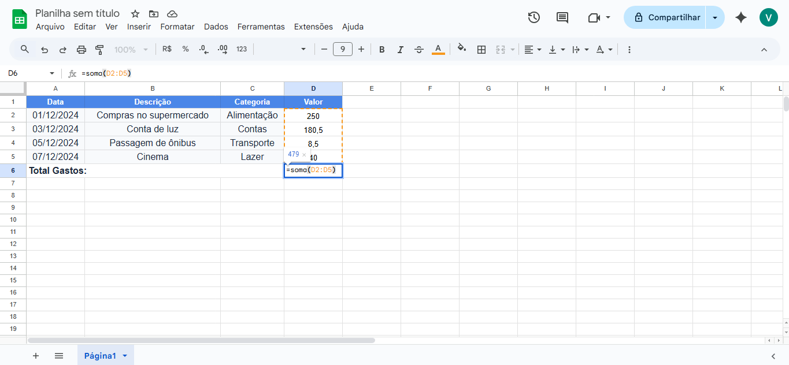
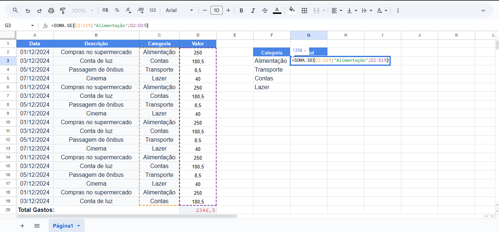
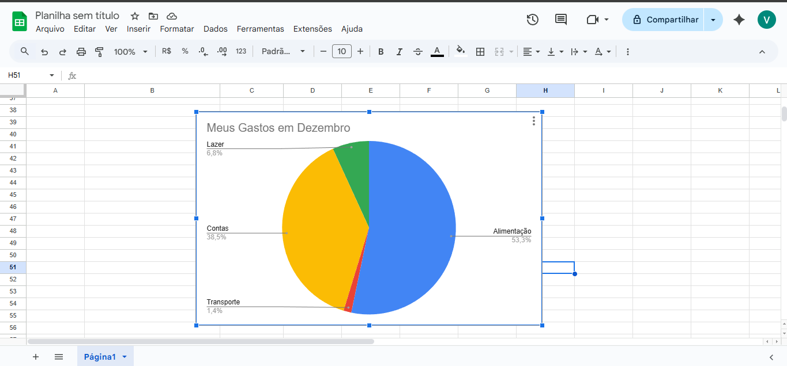
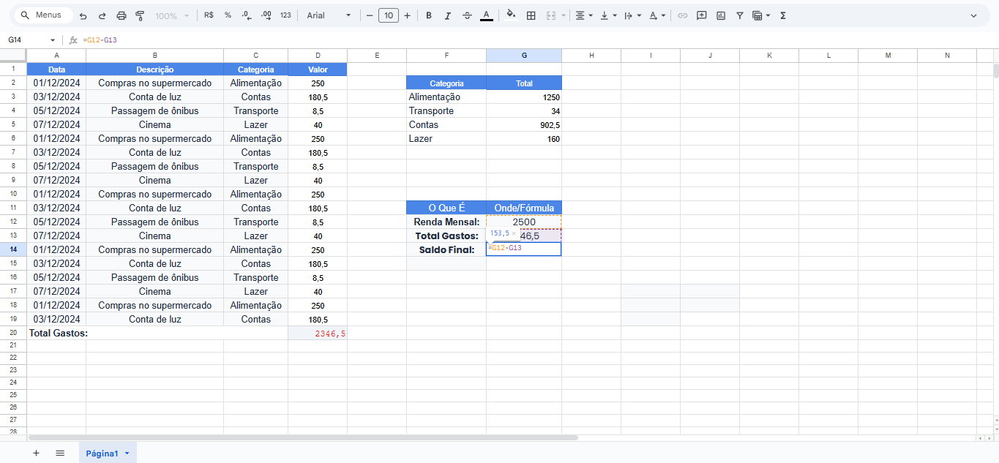

O Que Você Vai Aprender
- Acessar o Google Sheets (planilhas gratuitas do Google)
- Criar estrutura básica de controle financeiro
- Usar 3 fórmulas essenciais: SOMA, SOMA.SE e cálculo de saldo
- Criar gráfico automático para ver onde gasta mais
- Usar a planilha pelo celular
- Compartilhar com família (se quiser)
- Analisar seus gastos mensais
Antes de Começar: Você precisa ter uma conta Google (Gmail). Se não tem, pode criar gratuitamente em gmail.com. É a mesma conta que você usa para YouTube e outros serviços do Google!
Por Que Controlar as Finanças?
Muita gente não sabe exatamente para onde vai o dinheiro no final do mês. Com uma planilha simples, você vai:
- Saber para onde vai cada centavo - Identificar gastos desnecessários
- Economizar dinheiro - Cortar despesas que você nem sabia que tinha
- Evitar dívidas - Não gastar mais do que ganha
- Planejar o futuro - Guardar dinheiro para objetivos
- Ter paz de espírito - Saber que está no controle
- Tomar decisões melhores - Baseadas em dados reais
Dados Interessantes: Estudos mostram que pessoas que controlam seus gastos economizam em média 20% do que ganham, enquanto quem não controla frequentemente fica endividado!
1
Acessar o Google Sheets
O Google Sheets é como um Excel, mas gratuito e funciona na internet. Você pode acessar de qualquer lugar!
Pelo Computador:
- Abra seu navegador
- Digite:
sheets.google.com
- Faça login com sua conta Google (Gmail)
Pelo Celular:
- Baixe o app "Google Planilhas" na loja (Play Store ou App Store)
- Abra o app
- Faça login com sua conta Google
Vantagens do Google Sheets:
- Totalmente gratuito
- Salva automaticamente (nunca perde dados)
- Acessa de qualquer dispositivo
- Pode compartilhar com outras pessoas
- Funciona offline no celular

Tela inicial do Google Sheets
2
Criar Nova Planilha
Agora vamos criar sua planilha de controle financeiro!
- Na tela inicial do Google Sheets, clique no botão "+" (mais) ou em "Em branco"
- Uma planilha vazia vai abrir
- Clique em "Planilha sem título" no canto superior esquerdo
- Digite um nome:
Controle Financeiro 2024
- Pronto! Sua planilha está criada
A planilha salva automaticamente! Você não precisa clicar em "Salvar". Tudo que você digitar é salvo na hora na sua conta do Google.

Clique no nome para renomear a planilha
3
Criar a Estrutura Básica (Cabeçalhos)
Agora vamos criar as colunas da nossa planilha. Vamos usar uma estrutura simples e eficiente!
Na primeira linha (linha 1), digite:
| Célula |
O Que Digitar |
| A1 |
Data |
| B1 |
Descrição |
| C1 |
Categoria |
| D1 |
Valor |
Dica para deixar bonito:
- Selecione toda a linha 1 (clique no número "1" no lado esquerdo)
- Clique no botão de Negrito (B) ou pressione Ctrl+B
- Clique no ícone de cor de fundo e escolha uma cor (azul claro fica bom)
- Centralize o texto (botão de alinhar ao centro)

Cabeçalhos da planilha criados e formatados
4
Preencher com Seus Gastos
Agora vamos adicionar seus gastos! Vou dar exemplos para você entender:
Exemplo de preenchimento (linha 2 em diante):
| Data |
Descrição |
Categoria |
Valor |
| 01/12/2024 |
Compras no supermercado |
Alimentação |
250,00 |
| 03/12/2024 |
Conta de luz |
Contas |
180,50 |
| 05/12/2024 |
Passagem de ônibus |
Transporte |
8,50 |
| 07/12/2024 |
Cinema |
Lazer |
40,00 |
Categorias Sugeridas:
- Alimentação: Supermercado, padaria, feira, delivery
- Transporte: Ônibus, Uber, combustível, manutenção carro
- Contas: Luz, água, internet, telefone, aluguel
- Lazer: Cinema, restaurante, viagens, hobbies
- Saúde: Remédios, consultas, plano de saúde
- Educação: Cursos, livros, materiais
- Vestuário: Roupas, sapatos, acessórios
- Outros: Gastos que não se encaixam acima
Dica Importante: No início, anote TODOS os gastos por 1 mês completo, mesmo os pequenos (cafezinho, bala, etc). Você vai se surpreender com quanto gasta em "coisinhas"!

Exemplo de planilha preenchida com gastos
5
Fórmula 1: Calcular Total de Gastos (SOMA)
Agora vem a parte MÁGICA! Vamos fazer a planilha calcular automaticamente quanto você gastou!
Vamos supor que você preencheu da linha 2 até a linha 20 (19 gastos).
Como fazer:
- Clique em uma célula vazia abaixo dos seus gastos (ex: célula C22)
- Digite: Total Gastos:
- Clique na célula ao lado (célula D22)
- Digite a fórmula:
=SOMA(D2:D20)
- Pressione ENTER
- Pronto! A soma aparece automaticamente!
Entendendo a Fórmula:
=SOMA(D2:D20)
= Inicia uma fórmula
SOMA = Função que soma valores
D2:D20 = Células da D2 até a D20 (todos os valores)
Dica Profissional: Se você adicionar mais gastos depois, a fórmula não atualiza automaticamente. Use =SOMA(D2:D100) para ter "espaço" para adicionar até 99 gastos!

Fórmula SOMA calculando total de gastos
6
Fórmula 2: Calcular Gastos por Categoria (SOMA.SE)
Agora vamos ver quanto você gastou em CADA categoria! Assim você descobre onde está gastando mais.
Vamos criar uma tabela resumo ao lado:
- Na célula F2, digite: Categoria
- Na célula G2, digite: Total
- Abaixo (F3 em diante), liste suas categorias:
- F3: Alimentação
- F4: Transporte
- F5: Contas
- F6: Lazer
- ... (e assim por diante)
- Na célula G3 (ao lado de "Alimentação"), digite:
=SOMA.SE(C2:C100;"Alimentação";D2:D100)
Esta fórmula significa:
- Procure na coluna C (categoria) de C2 até C100
- Quando encontrar "Alimentação"
- Some o valor correspondente na coluna D
Repita para cada categoria:
- G4:
=SOMA.SE(C2:C100;"Transporte";D2:D100)
- G5:
=SOMA.SE(C2:C100;"Contas";D2:D100)
- E assim por diante...
Resultado: Agora você vê EXATAMENTE quanto gastou em cada categoria! Isso ajuda a identificar onde pode economizar.

Tabela resumo com gastos por categoria
7
Criar Gráfico Automático
Um gráfico visual ajuda MUITO a entender para onde vai seu dinheiro! Vamos criar um gráfico de pizza.
Como fazer:
- Selecione sua tabela resumo (células F2:G10, por exemplo)
- Clique no menu "Inserir" no topo
- Clique em "Gráfico"
- O Google Sheets vai sugerir um gráfico automaticamente
- Se não for gráfico de pizza, clique em "Tipo de gráfico" e escolha "Gráfico de pizza"
- Pronto! Seu gráfico está criado!
Personalize seu gráfico:
- Clique nos 3 pontinhos no gráfico
- Clique em "Editar gráfico"
- Na aba "Personalizar", você pode:
- Mudar título do gráfico (ex: "Meus Gastos em Dezembro")
- Mudar cores das fatias
- Mostrar porcentagens
Interpretando o Gráfico: A fatia maior é onde você mais gasta! Se "Lazer" está ocupando metade do gráfico, talvez seja hora de economizar nessa área.

Gráfico de pizza com gastos por categoria
8
Fórmula 3: Calcular Saldo (Quanto Sobra)
Agora a parte mais importante: saber se você está gastando MAIS ou MENOS do que ganha!
Vamos criar uma seção de resumo:
- Em uma área vazia (ex: células F12 a G15), crie:
| O Que É |
Onde/Fórmula |
| Renda Mensal: |
Digite seu salário (ex: 2500) |
| Total Gastos: |
=SOMA(D2:D100) |
| Saldo Final: |
=G12-G13 |
Exemplo prático:
- Célula F12: digite "Renda Mensal:"
- Célula G12: digite seu salário, ex:
2500
- Célula F13: digite "Total Gastos:"
- Célula G13: digite
=SOMA(D2:D100)
- Célula F14: digite "Saldo Final:"
- Célula G14: digite
=G12-G13
Interpretando o Saldo:
Saldo POSITIVO (ex: R$ 300) = Você economizou!
Saldo NEGATIVO (ex: -R$ 200) = Você gastou mais do que ganha!
Atenção: Se seu saldo está negativo, você está entrando em dívidas! É hora de cortar gastos desnecessários. Analise o gráfico e veja onde pode economizar.

Resumo financeiro com saldo calculado
Como Usar a Planilha no Celular
A grande vantagem é que você pode atualizar sua planilha de qualquer lugar!
Passo a passo:
- Baixe o app "Google Planilhas" (Play Store ou App Store)
- Abra o app e faça login com sua conta Google
- Sua planilha aparecerá automaticamente
- Toque na planilha para abrir
- Toque em uma célula vazia para adicionar um gasto novo
- Preencha data, descrição, categoria e valor
- Os totais e gráficos atualizam automaticamente!
Dica de Ouro: Toda vez que fizer uma compra, adicione NA HORA na planilha pelo celular! Assim você não esquece e mantém tudo organizado. Leva só 30 segundos!
Compartilhar com a Família
Se você divide despesas com cônjuge ou família, pode compartilhar a planilha!
Como compartilhar:
- No canto superior direito, clique no botão "Compartilhar"
- Digite o e-mail (Gmail) da pessoa
- Escolha a permissão:
- "Editor" - Pode adicionar e modificar gastos
- "Visualizador" - Só pode ver, não pode alterar
- Clique em "Enviar"
- A pessoa receberá um e-mail com o link
Vantagem: Todos veem a planilha atualizada em tempo real! Se seu cônjuge adicionar um gasto, você vê na hora.
Dicas Profissionais para Economizar
1. Regra dos 50-30-20:
50% da renda para necessidades (contas, alimentação)
30% para desejos (lazer, roupas)
20% para poupar/investir
2. Revise Semanalmente: Todo domingo, olhe sua planilha e veja como foi a semana. Está gastando muito? Onde pode cortar?
3. Estabeleça Metas: Ex: "Quero economizar R$ 500 este mês para comprar [objetivo]". Coloque a meta na planilha!
4. Identifique "Gastos Vampiros": Aqueles pequenos gastos diários que somam muito no final do mês (cafezinho, lanche, etc).
5. Crie uma Categoria "Emergência": Todo mês, tente poupar um pouco para imprevistos (médico, consertos, etc).
Dúvidas Comuns
1. Preciso anotar TODOS os gastos, mesmo os pequenos?
Sim! Principalmente no primeiro mês. Você vai se surpreender como os "pequenos gastos" somam muito! Depois de 1-2 meses, você já conhece seu padrão e pode ser menos rigoroso.
2. E se eu esquecer de anotar algum gasto?
Tudo bem! Quando lembrar, adicione. Use o extrato do banco ou cartão para conferir gastos que esqueceu.
3. Posso usar para controlar gastos do cartão de crédito?
Sim! Crie uma categoria "Cartão de Crédito" ou anote cada compra do cartão normalmente. No final do mês, some e veja se bate com a fatura.
4. Como faço para separar gastos pessoais de gastos do trabalho?
Duas opções:
- Criar categorias diferentes: "Alimentação Pessoal" e "Alimentação Trabalho"
- Criar duas abas na mesma planilha (uma para pessoal, outra para trabalho)
5. Posso usar para controlar gastos de mais de uma pessoa?
Sim! Adicione uma coluna extra chamada "Quem Gastou" e coloque o nome da pessoa. Depois use SOMA.SE para somar por pessoa.
6. A planilha vai ficar muito grande ao longo do tempo?
Solução: A cada ano, crie uma nova aba na mesma planilha (ex: "2024", "2025"). Ou crie uma planilha nova a cada ano.
Resolvendo Problemas Comuns
Problema: Fórmula mostra #ERRO ou #REF
Solução:
- Verifique se escreveu a fórmula corretamente
- Use ponto-e-vírgula (;) não vírgula na fórmula
- Certifique-se de que as células referenciadas existem
Problema: Total não atualiza quando adiciono gastos novos
Solução: Sua fórmula SOMA provavelmente tem um range fixo. Mude de =SOMA(D2:D20) para =SOMA(D2:D1000)
Problema: Gráfico não aparece ou está estranho
Solução:
- Certifique-se de selecionar APENAS a tabela resumo (categorias + valores)
- Não selecione células vazias
- Tente outro tipo de gráfico
Problema: Não consigo abrir no celular
Solução:
- Baixe o app "Google Planilhas" (não "Google Drive")
- Faça login com a MESMA conta Google do computador
- Aguarde sincronizar (precisa de internet)
Parabéns! Você Concluiu Este Tutorial!
Agora você sabe:
- Acessar e usar Google Sheets gratuitamente
- Criar planilha de controle financeiro
- Usar fórmulas SOMA, SOMA.SE e cálculos
- Criar gráficos automáticos
- Usar pelo celular
- Analisar seus gastos e economizar
Próximo passo: Comece HOJE! Abra sua planilha e adicione os gastos da última semana. Em 30 dias, você terá uma visão completa das suas finanças!